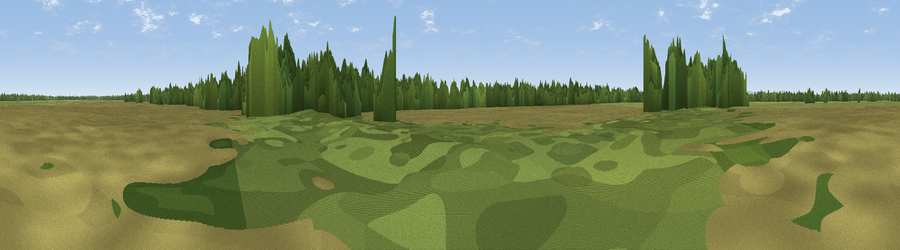

Mammoth Tower
#45022 in England · top 100% of its area beats it · near WhixallThe view, rendered

A 360° render of this exact spot computed from the terrain model, tree cover and land cover — summer colours, afternoon light, calibrated against photographs of famous viewpoints. Real trees, hedges and buildings will differ in detail.
The panorama
Grey silhouette: terrain skyline in each direction (720 bearings, Earth curvature and refraction included). Dashed green: skyline with trees (+15 m) and buildings (+8 m) as obstacles. Blue strip: how far the ground is visible on each bearing.
Where the view opens
Wedge length = distance to the farthest visible ground on that bearing (vegetation-aware). Rings at 10, 25 and 50 km.
What fills the view
78% grassland · 16% woodland · 6% cropland ·
Angular shares of the visible panorama (visual magnitude), not map area. Landscape diversity 0.30 (0–1 Shannon).
Key numbers
More beautiful places nearby
The staircase of upgrades: each row has a higher view potential than everything closer. Driving times are estimates from straight-line distance, calibrated against real road routing — check an actual route before setting out.
| Place | Direction | Drive | Score |
|---|---|---|---|
| Ellesmere Point | W · 6 km | ~13 min | 52.0 |
| Viewpoint near Colemere | WSW · 6 km | ~14 min | 56.4 |
| Viewpoint near Ellesmere | W · 7 km | ~14 min | 58.3 |
| Viewpoint near Prees | ESE · 8 km | ~16 min | 60.7 |
| Grotto Hill | ESE · 11 km | ~21 min | 69.4 |
| Viewpoint near Weston-under-Redcastle | ESE · 11 km | ~21 min | 77.0 |
| Viewpoint near Marchamley | SE · 14 km | ~25 min | 77.5 |
| Viewpoint near Harthill | N · 20 km | ~33 min | 78.5 |
52.91372, -2.77001 · source: osm viewpoint · position refined by local search. Computed location — check access rights before visiting.